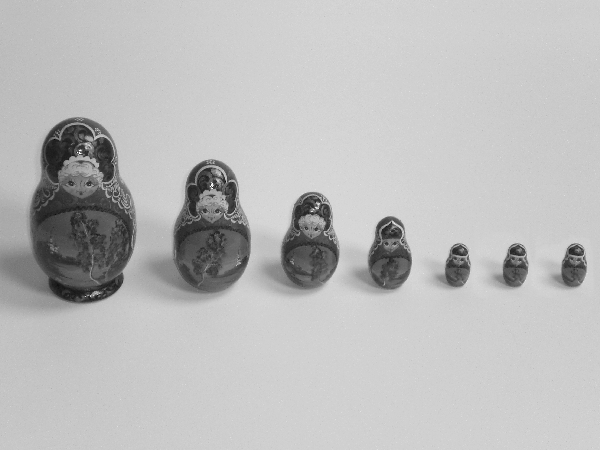

|  | Artinian: Let R be a ring. An R-module M is said to be artinian if
whenever M1, M2, ... is a sequence of R-submodules of
M with Each doll in this sequence represents one of the Mi. While this is perhaps a fairly straightforward visual metaphor for an artinian module, it is important to note that while this photograph implies that the Mi are decreasing in "size" (cardinality), this need not be the case: for instance, all of the submodules could be countably infinite. Rather, we have that each Mi contains Mi+1. While these dolls obviously do not contain one another in the photograph, the use of matryoshka dolls gives a nod to the notion of containment. As we move from left to right, the dolls eventually become the same in size, reflecting the fact that a descending sequence of submodules of an artinian module must eventually become stationary: that is, after some point in the sequence, the Mi are all identical.
|